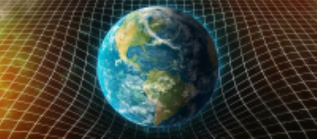

Rzutem (ang. projectile motion) nazywamy ruch ciała wystrzelonego lub upuszczonego w powietrzu, który zachodzi jedynie z przyspieszeniem grawitacyjnym.
W zagadnieniach fizycznych i inżynierskich bardzo często mamy do czynienia z rzutami. Przykładem takiego ruchu może być ruch meteoroidu wpadającego w atmosferę ziemską, fajerwerku wystrzelonego w powietrze, czy lot piłki w dowolnej dyscyplinie sportu.
Co więc będzie nas interesować? Postaramy się opisać ten ruch znanymi wzorami dotyczącymi ruchu przyspieszonego. Będzie interesowała nas:

- wysokość, na jaką wzniosło się ciało,
- droga, jaką pokonało,
- czas ruchu,
- prędkość ciała,
- w rzutach poziomym i ukośnym postaramy się opisać ruch równaniami.